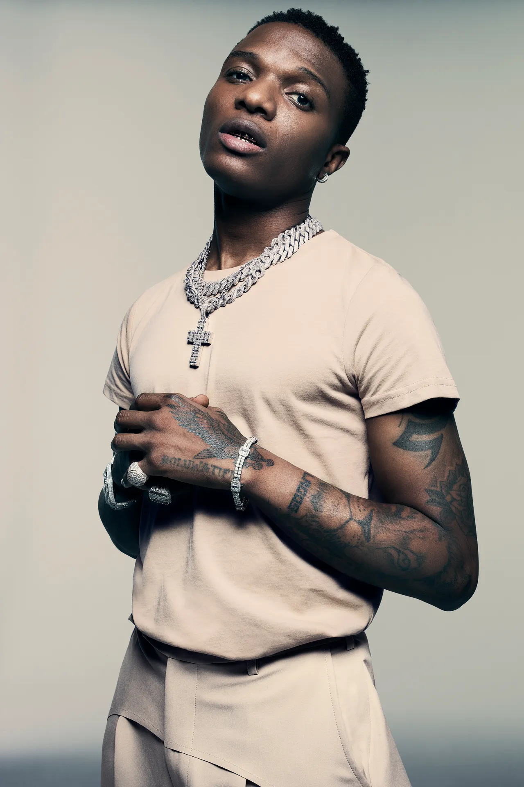

Burna Boy: Damini Ebunoluwa Ogulu (born 2 July 1991)professionally known as Burna Boy, is a Nigerian singer, songwriter and record producer. He is credited for popularizing Afrobeats and Afrofusion globally.
He rose to stardom in 2012 after releasing "Like to Party", the lead single from his debut studio album L.I.F.E(2013). in 2017, Burna Boy signed with Atlantic Records in the United States (and its parent company Warner Music Group internationally) to release his third studio album, Outside (2018).
In 2019, he won Best International Act at the BET Awards, and was named an Apple Music Up Next artist. He also released his fourth studio album, African Giant, which went on to win Album of the Year at the All Africa Music Awards and was nominated for Best World Music Album at the 62nd Annual Grammy Awards. He was awarded African Artist of the Year at the 2020 Ghana Music Awards. Burna Boy released his fifth studio album, Twice as Tall, in August 2020. It won Best World Music Album at the 63rd Annual Grammy Awards. He again won Best International Act at the 2021 BET Awards.
Burna Boy's sixth studio album Love, Damini was released in 2022 and became the highest debut of an African album on the Billboard 200 chart. It also became the highest-charting African album in France, the Netherlands and the UK.In October, Burna Boy was awarded the Member of the Order of the Federal Republic plaque for his achievements in music.In 2023, Rolling Stone ranked him number 197 on its list of the 200 greatest singers of all time.Burna Boy won his fourth Best International Act at the BET Awards in 2023.He won The Headies Afrobeats Single of the Year category and also the Song of the Year for "Last Last".

Wizkid: Ayodeji Ibrahim Balogun (born 16 July 1990), known professionally as Wizkid,is a Nigerian singer and songwriter. A prominent figure in the modern day Afrobeats music scene,he is regarded as one of the most commercially successful and most influential African recording artists of the 21st century.
He began recording music at the age of 11 and released a collaborative album with the Glorious Five, a group he and a couple of his church friends formed. In 2009, Wizkid signed a record deal with Banky W's Empire Mates Entertainment (E.M.E). He later rose to the limelight after releasing "Holla at Your Boy", the lead single from his debut studio album, Superstar (2011), which also spawned the singles "Tease Me/Bad Guys" and "Don't Dull".
In September 2014, he released the self-titled second studio album, Ayo. The album was supported by six singles, including the song "Jaiye Jaiye". Wizkid left E.M.E. after his contract expired. In 2016, Wizkid achieved international recognition following his collaboration with Drake on the hit single "One Dance", which reached number-one on the US Billboard Hot 100 and topped the charts in 14 additional countries. The song broke multiple records, making Wizkid the first afrobeats artist to appear in the Guinness World Records.In March 2017, he signed a multi-album deal with RCA Records and released his third studio album Sounds from the Other Side, later that year. The album was supported by five singles, including "Come Closer" featuring Drake.
In 2018, he was featured on the song "Checklist" by Normani and Calvin Harris, which reached number-one on the Billboard World Digital Song Sales chart. The following year, he was featured on Beyoncé's project The Lion King: The Gift on the single "Brown Skin Girl", which also reached number-one on the World Digital Song Sales chart, and won him a Grammy Award for Best Music Video.In October 2020, he released his fourth album, Made in Lagos, which received commercial success and acclaim,reaching number-one on the Billboard World Album Chart.The album includes the single "Essence" featuring Tems, which became the first Nigerian song to chart on the Billboard Hot 100,and reached the top ten following a remix released by Justin Bieber. Wizkid's fifth album More Love, Less Ego was released on 11 November 2022.